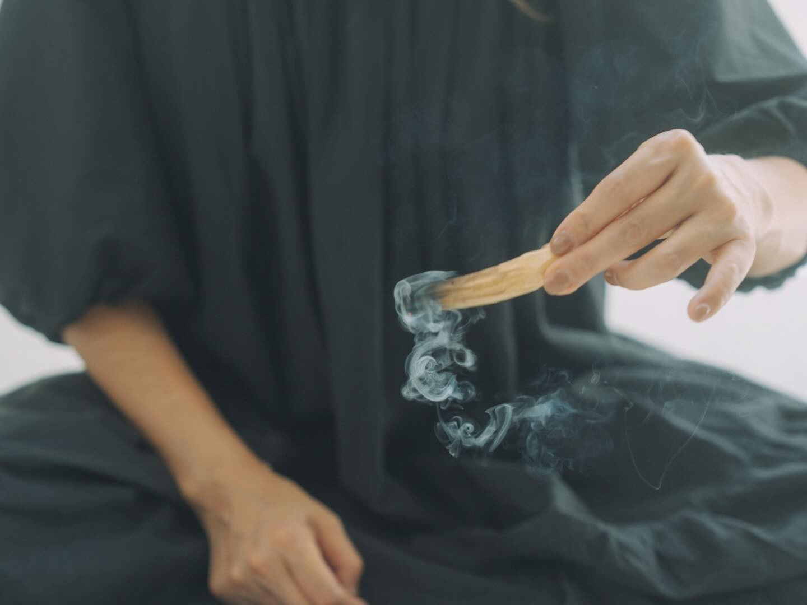
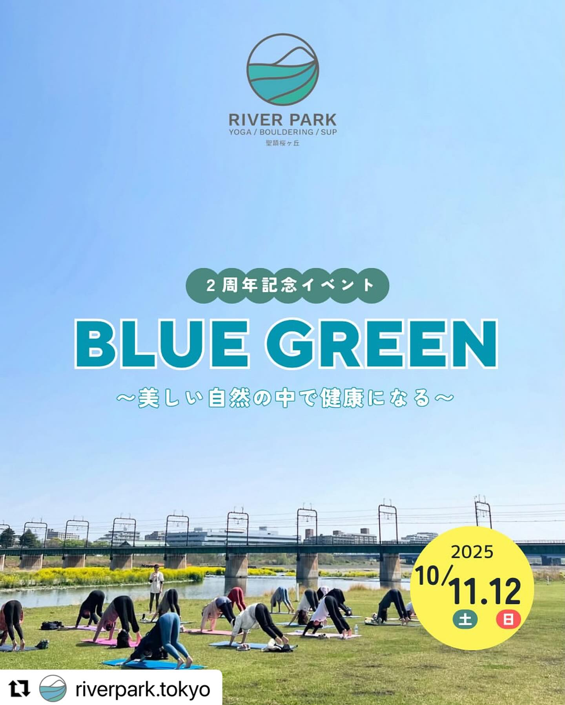
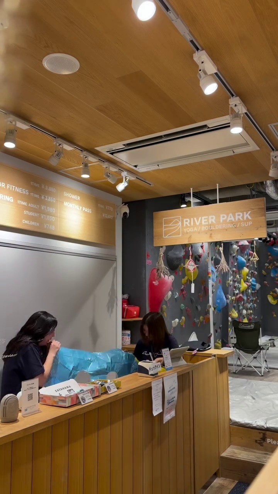

Studio Program
スタジオプログラム
多摩川を望む自然光あふれるスタジオで行う、ヨガ・ピラティス・TRXプログラム
PROGRAM & EFFECTS
プログラムの特徴と心身への効果
ヨガ（YOGA）
深い呼吸と自律神経の調和ポーズの完成度を競うのではなく、ゆったりとした深い呼吸に合わせて身体の緊張をほどくプログラムです。多摩川の景色と自然光の中で自分自身の内側に意識を向けることで、頭の中の疲れが静まり自律神経をととのえます。
ピラティス（PILATES）
インナーマッスルと姿勢改善背骨や骨盤まわりの深層筋（インナーマッスル）に意識を向け、正しい身体の使い方（アライメント）を身につけるエクササイズです。運動が苦手な方でも無理なく体幹を安定させることができます。
TRX® コンディショニング
重力と体幹を活かす全身調整天井から吊るされたサスペンション（帯）を使い、自分の体重と重力を利用して動くトレーニングです。ヨガやピラティスの動きをサポートしながら、関節に過度な負担をかけずに全身を引き締めます。
CATEGORY 01YOGA（ヨガ 全15クラス）

リラックス＆メディテーション
呼吸法と静かな瞑想で頭の中の疲れをリセット。自律神経を整え睡眠の質を高めます。
詳細・動画を見る ＞
アロマリラックスヨガ〜季節の養生〜
季節のアロマの香りに包まれ、肩こりや思考の緊張を解放。心身に深い安心感をもたらします。
詳細・動画を見る ＞
ハタフローヨガ
呼吸に合わせて流れるように動き、内側に熱を生み出して余分な力みや緊張をほぐします。
詳細・動画を見る ＞
セルフケア＆ヨガ
ツボ押しや優しい動きで普段届かない部位にアプローチ。全身の巡りを促し軽快な身体へ。
詳細・動画を見る ＞
アライメントヨガ
基本ポーズを通して骨盤や足の位置、身体の正しい使い方を学び安定したポーズを目指します。
詳細・動画を見る ＞季節のアロマテラピーヨガ
植物から抽出した100%天然精油の香りを楽しみながら、季節の不調を優しく和らげます。
詳細・動画を見る ＞
陰ヨガ
座位中心で3〜5分ポーズを重力に委ねてキープ。経絡を刺激し究極のリチャージ時間を。
詳細・動画を見る ＞
ストレッチ＆フローヨガ
丁寧なストレッチで身体をほぐしてからポーズへ。身体がかたい方や初心者も安心です。
詳細・動画を見る ＞ベーシックヨガ＆ブリージング
マッサージと基本ポーズで血流を促し、丁寧な呼吸法で自律神経を穏やかに整えます。
詳細・動画を見る ＞
セルフ整体＆ヨガ
タイ伝統療法ルーシーダットンを取り入れ、呼吸とセルフ整体で歪みを整え巡りを促します。
詳細・動画を見る ＞
ハタヨガフロー＆メディテーション
アクティブなフローヨガと静かな瞑想の調和。呼吸の流れに意識を向けて集中力を高めます。
詳細・動画を見る ＞
リラックス＆リストラティブヨガ
ボルスターやプロップスに身体を預けて積極的な休息。日々の疲労を深く癒します。
詳細・動画を見る ＞
ベーシックヴィンヤサヨガ
太陽礼拝をベースに途切れず動くヴィンヤサ。冷えやこわばりをほぐし温かな身体へ。
詳細・動画を見る ＞ホリスティックフローヨガ
肩甲骨と股関節を中心に全身を連動。解剖学的アプローチで日常の姿勢の歪みを改善。
詳細・動画を見る ＞
エナジーフローヨガ
流れるようなダイナミックな動きで滞りを一掃。デトックスと体幹強化、活力を回復。
詳細・動画を見る ＞
CATEGORY 03CONDITIONING & TRX®（全4クラス）
セルフケア＆ヨガ
運動強度：★★（セルフ整体・リセット）無垢材の床と自然光が心地よい2Fスタジオ。足元からじんわり温まりリラックスして動ける空間です。
日常生活にも取り入れやすいツボ押しややさしいエクササイズで普段意識しづらい部分にアプローチし、ヨガポーズで巡りを高めます。
PHYSICAL EFFECT（からだへの心地よい変化）
- 全身の巡りを促しむくみや冷えを解消
- 関節の可動域拡大と身体の軽さ向上
- デスクワーク疲れの根本リセット
MENTAL EFFECT（こころへの心地よい変化）
- 心身ともにフッと軽くなった解放感
- 自分の身体を慈しむセルフケア習慣の定着
- 穏やかで前向きな心地よい気分
陰ヨガ
運動強度：★☆☆（究極のリチャージ・眠りヨガ）静寂と柔らかな光のスタジオ。プロップス（ボルスター・ブロック）を使い、完全に重力に委ねられる環境です。
ゆったりとした座位中心で3〜5分ポーズをホールド。筋肉だけでなく腱や靭帯、結合組織、経絡に深くアプローチします。
PHYSICAL EFFECT（からだへの心地よい変化）
- 経絡を刺激し五臓と気血の巡りを整える
- 結合組織・関節深部の柔軟性向上
- 慢性的なこわばりや疲労の根本回復
MENTAL EFFECT（こころへの心地よい変化）
- 神経系を瞑想状態で深くリフレッシュ
- 慌ただしい日常を忘れる静寂のひととき
- 究極のリラックスと活力のリチャージ
ストレッチ＆フローヨガ
運動強度：★〜★★（初心者・身体が硬い方も安心）多摩川の景色が広がる明るいスタジオ。身体がかたい方でも心地よく伸ばせる安心空間です。
はじめに入念なストレッチで筋肉をほぐしてからポーズへ。身体の変化を丁寧に感じながら呼吸を深めていきます。
PHYSICAL EFFECT（からだへの心地よい変化）
- 筋肉の柔軟性向上とケガの予防
- 呼吸がスムーズに入り血行促進
- 首・肩・股関節の可動域拡大
MENTAL EFFECT（こころへの心地よい変化）
- 身体が伸びる心地よい爽快感
- 初心者でも無理なく続けられる安心感
- 緊張が解けて穏やかなマインドへ
セルフ整体＆ヨガ
運動強度：★★（タイ古式整体・歪みリセット）落ち着きのある自然光スタジオ。マット上でゆったりと身体を点検できる温もりある空間です。
タイ伝統療法（ルーシーダットン）を取り入れ、独自の呼吸法・ストレッチ・マッサージで身体を整え、後半はヨガで血流を高めます。
PHYSICAL EFFECT（からだへの心地よい変化）
- 骨盤・背骨の左右差のセルフ調整
- 血流やリンパの滞りを一気に改善
- 慢性的な腰痛や肩こりの予防
MENTAL EFFECT（こころへの心地よい変化）
- 身体が整うことによる爽快な安堵感
- 自分で不調を整えられる安心感
- すっきりとしたリフレッシュ感覚
リラックス＆リストラティブヨガ
運動強度：★☆☆（プロップス完備・積極的休養）ボルスター/ブロック/ブランケット/ベルトなどの補助器具（プロップス）に囲まれた、安心の癒しスタジオです。
腹式呼吸で緩めるポーズから、思わず寝てしまうほど心地良いリストラティブヨガへ。プロップスに身を委ね楽な体勢でホールドします。
PHYSICAL EFFECT（からだへの心地よい変化）
- 副交感神経が最大限に優位になり疲労回復
- 筋肉の完全脱力による血圧と脈拍の安定
- 慢性的な緊張やこわばりの解放
MENTAL EFFECT（こころへの心地よい変化）
- 自分を深く内観し心身の調和を取り戻す
- 日々忙しい方にホッとひと息つく極上の癒し
- 深いリラクゼーションによる睡眠の質向上
エナジーフローヨガ
運動強度：★★★（デトックス・活力チャージ）多摩川の雄大な景色を臨みながら、エネルギーを高めていくアクティブなスタジオ環境です。
止まることなく流れるように全身を動かし、滞っている部位を流し巡らせてデトックス。体幹を強化しながら活力を引き出します。
PHYSICAL EFFECT（からだへの心地よい変化）
- 全身の巡りを促しむくみや冷えをスッキリ解消
- 体幹（インナーマッスル）と下半身の強化
- 自律神経の活性化と代謝アップ
MENTAL EFFECT（こころへの心地よい変化）
- モヤモヤした気分の爽快なデトックス
- 内側から湧き出る活力とエネルギーチャージ
- やり遂げた充実感と自己肯定感
リラインピラティス
運動強度：★★★（姿勢再配列・ボディメイク）無垢床の温もりと正確な身体の配列を意識できるクリーンで集中度の高いスタジオです。
何気ない日常のクセで歪んでしまいやすい姿勢をリラインピラティスのメソッドに沿って整え、つま先から頭頂まで繋がりのある姿勢と動作を習得します。
PHYSICAL EFFECT（からだへの心地よい変化）
- 骨盤・背骨の左右対称な美しいアライメント
- つま先から頭頂までのしなやかな身体の連動
- ウエスト・ヒップラインの引き締め
MENTAL EFFECT（こころへの心地よい変化）
- 背筋がスッと伸びることによる自信と活力
- 自分の身体の使い方のクセへの深い理解
- 軽やかで洗練された所作の定着
ピラティスアドバンス
運動強度：★★★（体幹コントロール・上級）スタジオの開放的な空気の中、高い集中力で深層筋をコントロールできる環境です。
ピラティスの基本を土台に、より流れのある動きやコントロール性の高いエクササイズを行い、ワンランク上の軽やかでしなやかな身体を目指します。
PHYSICAL EFFECT（からだへの心地よい変化）
- 深層インナーマッスルの最大強化
- 全身のコーディネーションとバランス向上
- しなやかでブレない強靭な体幹づくり
MENTAL EFFECT（こころへの心地よい変化）
- 高度なコントロールに集中する研ぎ澄まされた時間
- 身体を自在に扱える喜びと達成感
- 日常の所作が優雅で軽快になる感覚
ピラティスベーシック
運動強度：★★（インナーマッスル・初心者歓迎）初心者でも無理なく取り組める、明るく清潔感あふれる2F自然光スタジオです。
ピラティスの基本動作や胸式ラテラル呼吸をひとつひとつ丁寧にプラクティス。深部の筋肉（インナーマッスル）を目覚めさせます。
PHYSICAL EFFECT（からだへの心地よい変化）
- 深部のインナーマッスルを鍛え姿勢改善
- 骨盤と背骨のアライメントを整え腰痛予防
- しなやかで美しいボディラインの形成
MENTAL EFFECT（こころへの心地よい変化）
- 自分の身体に集中することで心のざわめきを静める
- 正しい呼吸による心地よいリラックス感
- 生き生きとした健康的で美しい自分を見つける時間
TRX® for yoga
運動強度：★☆☆（自重サポート・体幹安定）天井から専用サスペンションが吊るされた安全なスタジオ。重力と自重を心地よく利用できる空間です。
TRXサスペンションを補助具として使用してヨガを行います。自重を活かし体幹（コア）を自然に使いながら動きます。
PHYSICAL EFFECT（からだへの心地よい変化）
- ヨガポーズの安定性・柔軟性・筋力の同時向上
- 関節に無理な負担をかけない優しい可動域拡大
- 自然な体幹コアの筋力強化
MENTAL EFFECT（こころへの心地よい変化）
- サスペンションに身を預ける安心感
- 身体が軽々と伸びていく新しい爽快感
- 運動が久しぶりの方でも無理なく楽しめる楽しさ
TRX® for pilates
運動強度：★☆☆（体幹強化・姿勢改善）自重とサスペンションの張力をコントロールしやすい、広々とした自然光スタジオです。
TRXサスペンションを使用してピラティスを行います。不安定な中で動くことで体幹をダイレクトに目覚めさせます。
PHYSICAL EFFECT（からだへの心地よい変化）
- 深層体幹筋の強力な活性化と強化
- 骨盤のブレ改善と美しい立ち姿勢の形成
- レッスン後の身体の圧倒的な軽やかさ
MENTAL EFFECT（こころへの心地よい変化）
- バランスをとることで頭の中がスッキリ集中
- 身体の軸が整う爽快な達成感
- 日常の歩行や動作が軽くなる心地よさ
TRX® コンディショニング
運動強度：★☆☆（全身調整・柔軟性向上）2Fの自然光スタジオ。窓の外の多摩川を眺めながらリラックスしてコンディションを整える空間です。
TRXサスペンションを使用して身体のコンディションを最大限に高めます。ストレッチや軽快な有酸素エクササイズを行います。
PHYSICAL EFFECT（からだへの心地よい変化）
- 全身の柔軟性の向上と関節可動域の拡大
- 猫背・反り腰などの姿勢改善
- デスクワーク疲れや身体のこりのリセット
MENTAL EFFECT（こころへの心地よい変化）
- 身体がほぐれることによる深いリフレッシュ
- 無理のない運動でストレスを心地よく解消
- 明日への活力をチャージする前向きな気分
TRX® ワークアウト
運動強度：★★〜★★★（全身引き締め・運動不足解消）多摩川の空を背景に、エネルギッシュかつ安全に身体を動かせるアクティブなスタジオ環境です。
TRXサスペンションで体重の負荷を角度で調整しながらアクティブに動きます。45分間でも十分な運動量があり効率よく身体を鍛えます。
PHYSICAL EFFECT（からだへの心地よい変化）
- 全身の筋肉をバランスよく引き締めシェイプアップ
- 基礎代謝を向上させ太りにくい身体づくり
- 心肺機能とスタミナの向上
MENTAL EFFECT（こころへの心地よい変化）
- 45分間をやり遂げた爽快な達成感
- 心地よい汗による深いストレス発散
- 運動習慣の定着と自己肯定感の向上
STUDIO VOICES & INSTAGRAM
リール動画で見るスタジオ風景
スタジオで実際に開催されているクラス風景や、担当インストラクターによる解説リール動画・レッスン風景です。
INSTRUCTOR

- Ai
- Profile

- Aki
- Profile

- Asha
- Profile

- CHISATO
- Profile

- Chizuko
- Profile

- Daisuke
- Profile

- KEI
- Profile

- KOTA
- Profile

- MAIKO
- Profile

- MICHIKO
- Profile

- Maiko
- Profile

- Manami
- Profile

- Naoko
- Profile

- Nozomi
- Profile

- Tomomi Sakota
- Profile

- SARRY
- Profile

- Toshiya
- Profile

- Tsugumi
- Profile

- Wakana
- Profile

- YUHEI
- Profile

- Yoshiko
- Profile

- Yukiko
- Profile

- Ayumi
- Profile

- キワ
- Profile

- yumiko
- Profile

- おぐ
- Profile

- よっぴ
- Profile

- 小坂奈々
- Profile

- 空平
- Profile